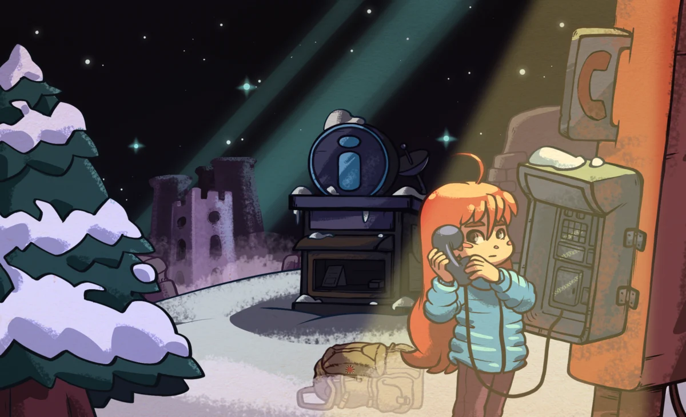
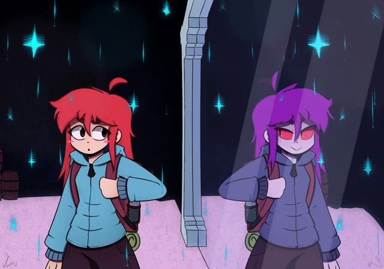

Na fase Old Site de Celeste, Madeline continua sua subida pela montanha e chega a um antigo terreno em ruínas cercado por uma atmosfera estranha e quase surreal. Conforme avança, ela começa a enfrentar sonhos e visões perturbadoras, mostrando que a montanha parece reagir diretamente aos seus sentimentos e inseguranças.

Durante o capítulo, Madeline passa a confrontar uma parte agressiva e negativa de si mesma, que tenta fazê-la desistir da escalada. Esse conflito revela mais sobre os medos e a ansiedade da protagonista, tornando claro que sua jornada é também uma luta interna contra seus próprios pensamentos.
